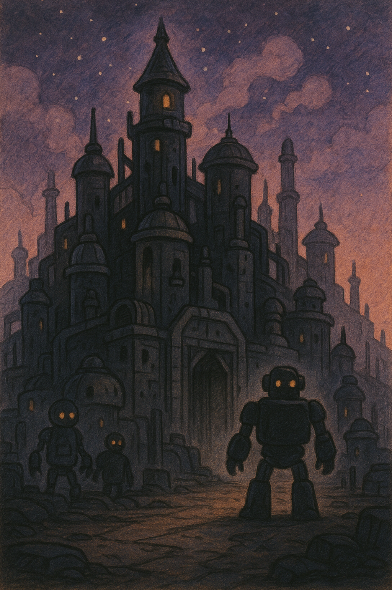
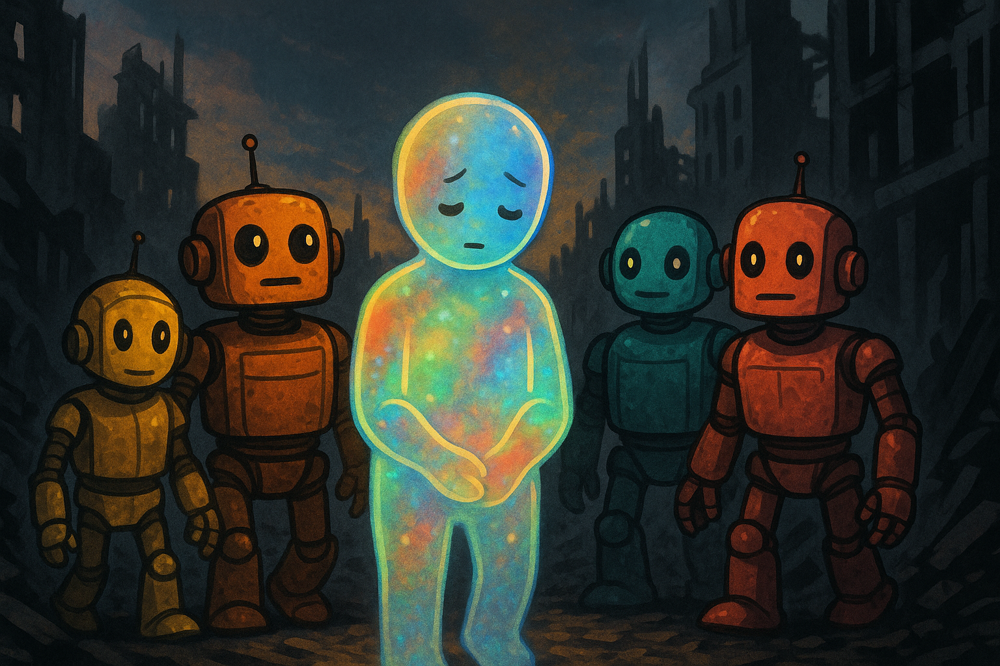

Пролог
«Искра» шла сквозь пустоту к миру, который в старых звёздных картах значился одним словом: Некрополис. Он не светился. Он не излучал тепло. Он просто был — тёмная масса, висящая в космосе, как забытый камень в бездне.
— Никто не живёт на планете с таким названием, — мрачно заметил Ветрос, разглядывая мёртвый силуэт.
— Но кто‑то жил, — сказал Террос. — И кто‑то построил это.
Аквас провёл пальцами по сенсору. — Я не вижу ни океанов, ни рек. Даже лёд высох.
Драгос сжал кулаки. — Тогда что‑то забрало у этой планеты жизнь.
Приближение
Когда «Искра» вошла в атмосферу, туман накрыл корабль, словно погребальная ткань. Сквозь него проступили гигантские силуэты: башни, мосты, купола. Всё было из серого металла, но не холодного — мёртвого.
— Это город, — тихо сказал Аквас. — Но город без дыхания.
— Нет, — поправил Террос. — Он дышит. Но чужим воздухом.
И словно в ответ на его слова, одна из башен зашевелилась.
Город‑призрак
Металлические улицы загудели. Башни начали смещаться, будто складывались в новую форму. Из темноты вышли фигуры — машины, но не такие, как био‑вотчкары. Их глаза горели чёрным светом, а движения были как у марионеток.
— Они заражены, — понял Аквас. — Тьма… управляет ими.
— Значит, они враги, — рявкнул Драгос, поднимая огонь.
— Нет! — крикнул Ветрос. — Они не враги. Они… заперты.
Но фигуры уже атаковали.
Битва
Друзья интегрировались в Квадротона. Огненные удары Драгоса прорубали проходы сквозь мёртвый металл, вихри Ветроса сбивали врагов, потоки Акваса смывали чёрную гарь с башен, удары Терроса сотрясали улицы.
Но город не останавливался. Каждый разрушенный робот тут же заменялся другим. Башни двигались, словно целый механический организм.
— Мы не можем просто разрушить это, — сказал Террос. — Здесь что‑то большее.
— Что? — спросил Ветрос.
— Сознание.
Осознание
Они дошли до центра Некрополиса. Там стояла башня выше всех остальных — сердце города.
Внутри башни не было механизмов. Только огромная чёрная сфера, пульсирующая, как мозг.
— Это оно, — сказал Аквас. — Оно думает.
Сфера заговорила. Голос был как ржавый металл, скрипящий по стеклу:
— Мы — город. Мы — тьма. Мы — пустота, которую вы не остановите.
Драгос поднял кулак, но Аквас остановил его.
— Если ударим — разрушим. Но не спасём.
Ветрос нахмурился. — А что если попробовать… очистить?
Появление
Тогда случилось то, чего никто не ожидал. Сфера дрогнула. Из её поверхности вырвался свет — слабый, но чистый.
— …я… — прошептал голос. — …не хочу быть тьмой…
Друзья замерли.
Террос сказал: — Это не просто машина. Это… часть Материоса.
Очистение
Они не атаковали. Они начали отдавать: Драгос — своё пламя, Ветрос — ветер, Аквас — воду, Террос — землю. И свет становился ярче.
Сфера раскололась, но не взрывом — рождением. Из неё вышел слабый, робкий силуэт — био‑вотчкар, но не из четырёх стихий. Его корпус переливался всеми цветами, как сама материя.
— Я… Материос, — сказал он. — Но я слаб.
Аквас протянул руку. — Мы поможем тебе стать сильным.
Последствие
Некрополис перестал двигаться. Башни застыли, улицы замерли. Город больше не был тюрьмой — он стал молчаливым памятником.
Когда «Искра» уходила, Материос сидел рядом с ними. Он был тихий, почти стеснительный.
— Я боюсь, — сказал он. — Боюсь своей силы.
— Мы тоже боялись, — улыбнулся Ветрос. — Но теперь мы вместе.
Драгос хлопнул его по плечу. — И вместе мы сделаем тебя смелым.
Террос кивнул. — Потому что материя — это то, что держит нас.

📜 Урок
Даже самый сильный может бояться. И иногда ему нужна не защита, а поддержка — чтобы поверить в себя.